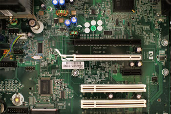

What is a computer?
A computer is an electronic device that manipulates information, or data. It has the ability to store, retrieve, and process data. You may already know that you can use a computer to type documents, send email, play games, and browse the Web. You can also use it to edit or create spreadsheets, presentations, and even videos
Watch the video below to learn about different types of computers
Hardware vs. software
Hardwareis any part of your computer that has a, such as the keyboard or mouse. It also includes all of the computer's internal parts, which you can see in the image below
 element
Softwareis anyset of instructions that tells the hardwarewhat to doand how to do it.Examples of software include web browsers, games, and word processors. Below, you can see an image of Microsoft PowerPoint, which is used to create presentations
What are the different types of computers?
When most people hear the word computer, they think of a personal computer such as a desktop or laptop . However, computers come in many shapes and sizes , and they perform many different functions in our daily lives. When you withdraw cash from an ATM , scan groceries at the store, or use a calculator , you're using a type of computer.
Desktop computers

Many people use desktop computers at work, home, and school. Desktop computers are designed to be placed on a desk, and they're typically made up of a few different parts, including the computer case, monitor, keyboard, and mouse
Laptop computers

The second type of computer you may be familiar with is a laptop computer, commonly called a laptop. Laptops are battery-powered computers that are more portable than desktops, allowing you to use them almost anywhere.
Tablet computers
Tablet computers—or tablets—are handheld computers that are even more portable than laptops. Instead of a keyboard and mouse, tablets use a touch-sensitive screen for typing and navigation. The iPad is an example of a tablet.
Servers
A server is a computer that serves up information to other computers on a network. For example, whenever you use the Internet, you're looking at something that's stored on a server. Many businesses also use local file servers to store and share files internally.
Other types of computers
- Smartphones: Many cell phones can do a lot of things computers can do, including browsing the Internet and playing games. They are often called smartphones
- Wearables: Wearable technology is a general term for a group of devices—including fitness trackers and smartwatches—that are designed to be worn throughout the day. These devices are often called wearables for short.
- Game consoles: A game console is a specialized type of computer that is used for playing video games on your TV.
- TVs: Many TVs now include applications—or apps—that let you access various types of online content. For example, you can stream video from the Internet directly onto your TV